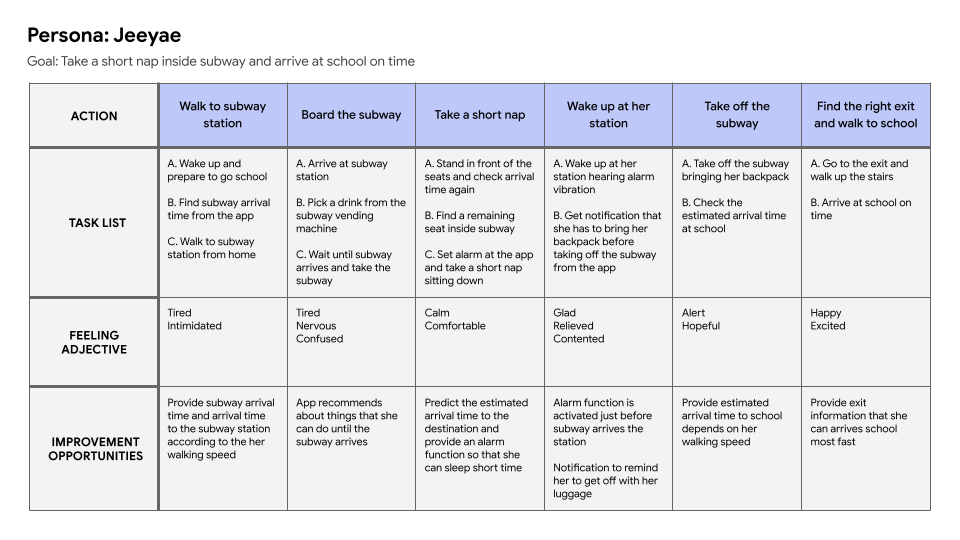
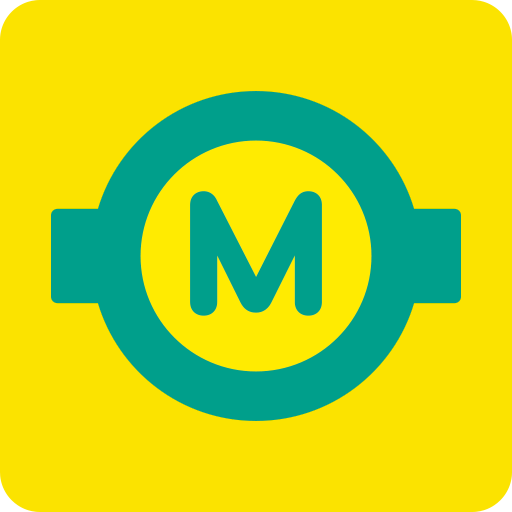
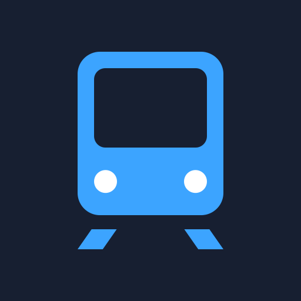
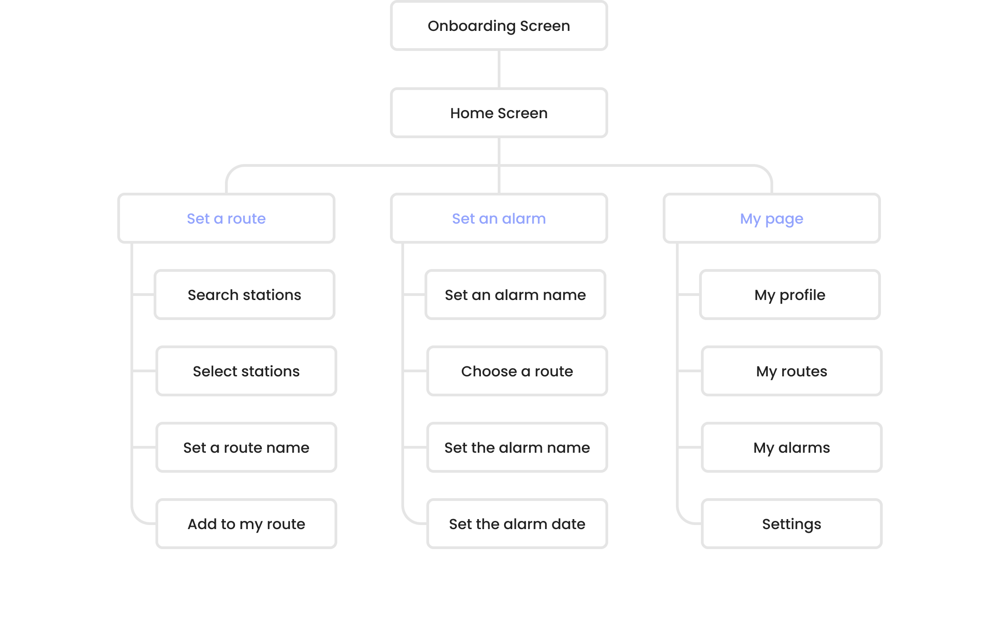
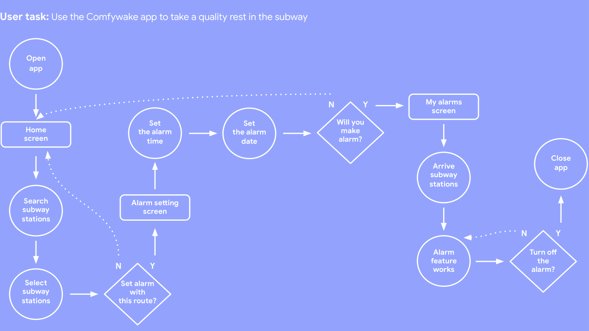
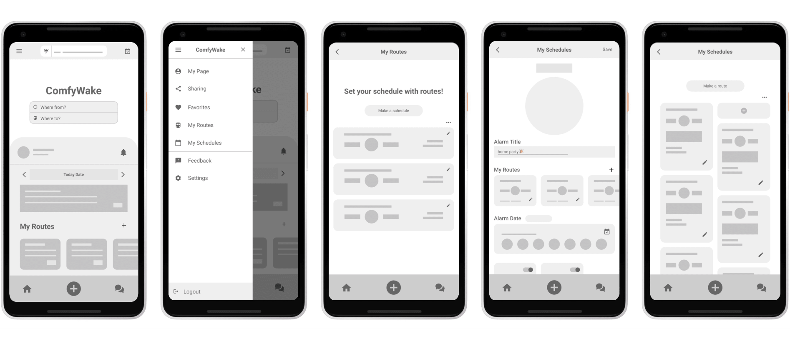

Comfywake
OVERVIEW
Comfywake is an alarm app that works in metropolitan subway.
It offers an alarm service based on subway time for people who
want to have a quality rest inside subway. Comfywake mainly
targets busy students and office workers who use the subway
as their main means of transportation
MY ROLE
UX designer designing Comfywake app from conception to delivery
TEAM
Solo Project
TOOLS
Figma, Illustrator
DURATION
March 2022 to April 2022
KEY SKILLS
Conducting interviews
Paper & digital wireframing
Low & high-fidelity prototyping
Conducting usability studies
Accounting for accessibility
Iterating on designs
01 - Understanding the user
User Research
I conducted interviews and created empathy maps to understand the users and their needs. Primary user groups identified through research were workers and college students who are busy and don’t have time to rest.
Research revealed that there’s difference in the features required by age groups.
Users in their 20s focused on precise alarm times, but users in their 50s and older
wanted personalized reminders.
User Personas

Busy college student
needs accurate subway timetable and alarm feature because she wants to sleep until she gets off the subway and shouldn’t be late for school
Old restaurant owner
needs an alarm feature considering old people’s walking speed because it takes longer than average for him to transfer the subway and he often forgets his groceries

Pain points
1. Time
Congested subway and wrong subway information makes users unable to use their time efficiently
2. Support
It's difficult to find an answer when users get stuck while using the app because there isn't customer service
3. Accessibility
Current subway transfer information doesn’t consider various age groups, so it’s difficult to predict the arrival time
Goals
- Arrive at the station at the planned time
- Take a short nap until the subway arrives the station
- Provide subway transfer time according to user's body age
- Reminder feature for people who often forget to take their luggage
User Journey Map
I focused on Jeeyae's feeling and pain points in every step of journey and tried to understand from her point of view for more improvement of Comfywake app features and user's experience
02 - Understanding the competitors
Competitive Analysis
1.

Google Maps
Location
International
Target audience
Travelers who want to find a way to a specific place
Unique value proposition
It's specialized in travel because you can save places by list
2.
Kakao Metro
Location
Metropolitan area, Busan, Daegu, Gwangju, and Daejeon
Target audience
Travelers who want to find a way to a specific place
Unique value proposition
It's specialized in travel because you can save places by list
3.
Smarter Subway
Location
Metropolitan area, Busan, Daegu, Gwangju, and Daejeon
Target audience
Travelers who want to find a way to a specific place
Unique value proposition
It's specialized in travel because you can save places by list
Strengths
• Voice commands feature
• Support multiple languages
• Clean UI and stable features
• Neat design and stable features
• Strong brand identity including colors and Kakao characters
• Clean and legible menus
• Easy to check previous/next train
• Provide minimum transfer time intuitively when selecting a station
Weakness
• Hard to know exact current location
• Some buildings are not registered in map
• Support only two languages
• Social login service is provided only through Kakao account
• Support only Korean
• No memorable brand identity
Gaps
• Only Google Maps provides voice commands feature
• Google Maps and Kakao Metro rely on their brand fame more than other apps
• Only Smarter Subway provide smart information such as searching for places(bus, bicycle, scooter, restroom, convenience stores, etc.) around the subway station
Opportunities
• Feature to set multiple alarms according to the subway route the user frequently goes to
03 - Starting the design
Site Map
User Flow
Storyboard
Scenario: Subway alarm app to help a user to arrive his restaurant on time
Big picture

Close-up

Wireframes
- Paper Wireframes
I took time to draft iterations of each screen of the app on paper. It ensured that the elements that will be made to digital wireframes would solve users' pain points.
For the home screen, I designed it considering users can quickly access the main features such as route setting and making an alarm.
- Stars were used to mark the elements of each sketch that would be used in the initial digital wireframes.
- Digital Wireframes
As the initial design phase continued, I made sure to base screen designs on feedback and findings from the user research.
1. Search bar at the top of the home screen catches users’ eyes and can make users search their stations quickly.
2. By placing “My Routes” to home screen, users can see at a glance the subway routes they use frequently.
3. Easy navigation helps users to use time efficiently and equip the app to work with assistive technologies.
4. Users can set alarms based on real-time subway time using the subway routes they made.
Low-fidelity prototype
Using the completed set of digital wireframes,
I created a low-fidelity prototype.
The primary user flow I connected was making subway routes
and alarms using that routes, so the prototype
could be used in a usability study.
The low-fidelity app prototype for Comfywake was tested and can be viewed here.
Usability study
I conducted two rounds of usability studies.
Findings from the first study helped guide the designs from wireframes to mockups.
The second study used a high-fidelity prototype and revealed what aspects of the mockups needed refining.
Round 1 findings
- 1. Users want exact subway timetable
- 2. Users want more customization options
- 3. Users want screens to connect well each other
Round 2 findings
- 1. The plus icon has to reflect its feature more clearly
- 2. Users can save time if the menus that match the user flow are placed on the side menu
- 3. Users need a button that can make a route at "My Routes" screen
04 - Refining the design
Mockups

After usability study
Plus button only navigated to a page that makes a schedule in early design, but after the usability studies, I gave options to make route or schedule to users when they clicked plus button.
I also revised the design of navigation menus so users can easily navigate to frequently used screens.

After usability study
The second usability study revealed frustration with the making a route flow. In early design, there wasn't a button to create a route on the "My Routes" screen, but after the usability studies, "Make a Schedule" button was added to the "My Routes" screen.

High-fidelity prototype
The final high-fidelity prototype presented cleaner user flows for making subway routes and setting alarms. It also met user needs for well connected app screens and additional menu for making a subway route.
The high-fidelity app prototype for Comfywake can be viewed here.
Accessibility considerations
1. Intuitive icons or text that represent its feature
2. Side menu that reflects user flow to save users' time
3. Smooth transition to provide better user experience
05 - Going forward
Takeaways
While designing the Comfywake app, I learned that the first ideas for the app are only the beginning of the process. Usability studies and peer feedback influenced each iteration of the app’s designs.
Next steps
- Conduct more user research to determine any new areas of need.
- Conduct another round of usability studies to validate whether the pain points users experienced have been effectively addressed.
Thank you for your time reviewing my work!